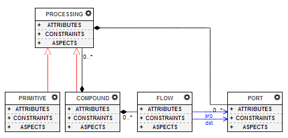
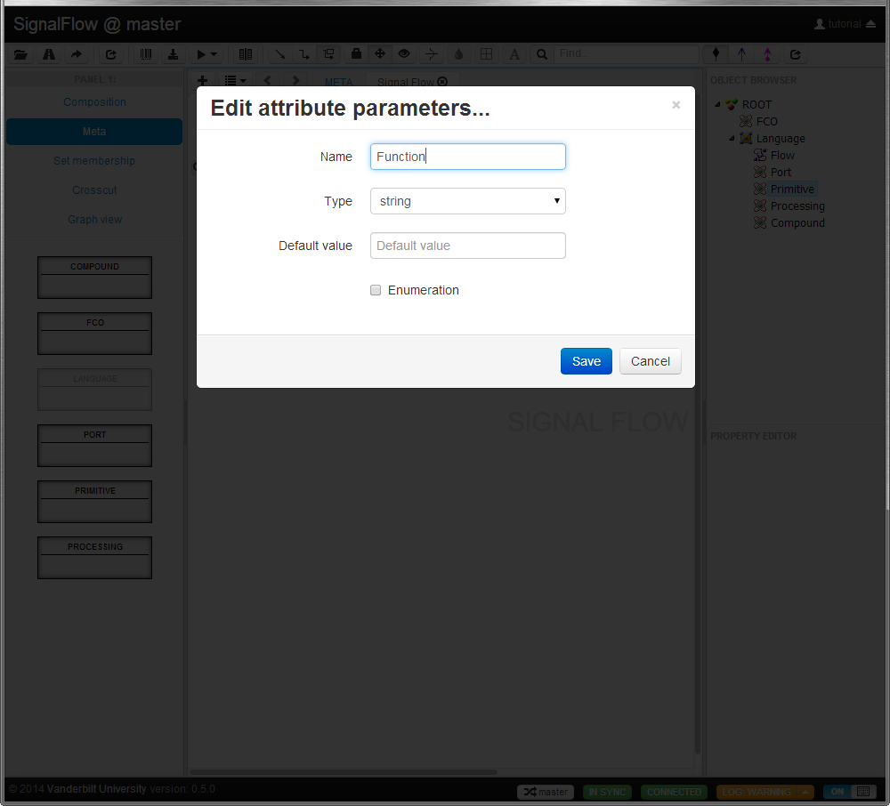
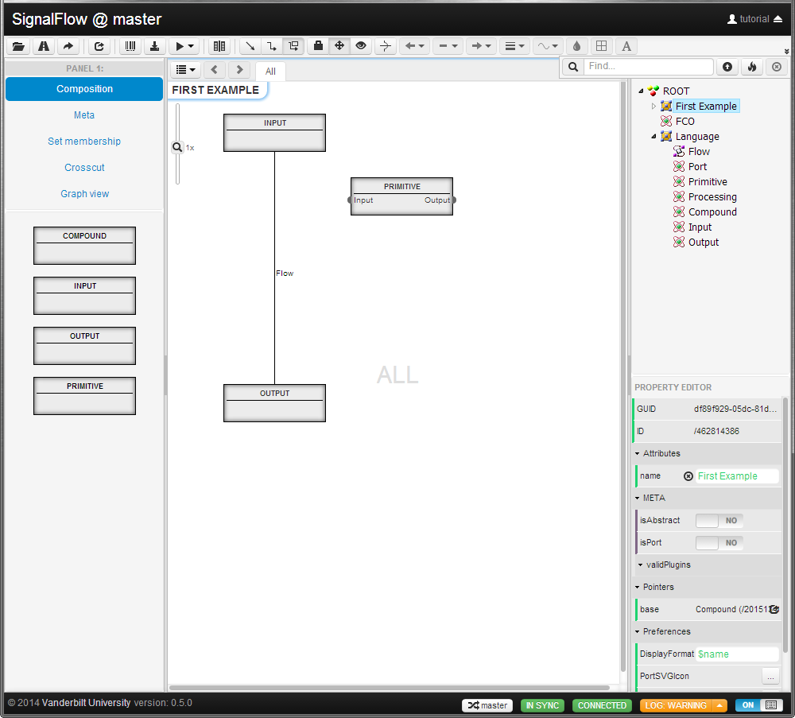
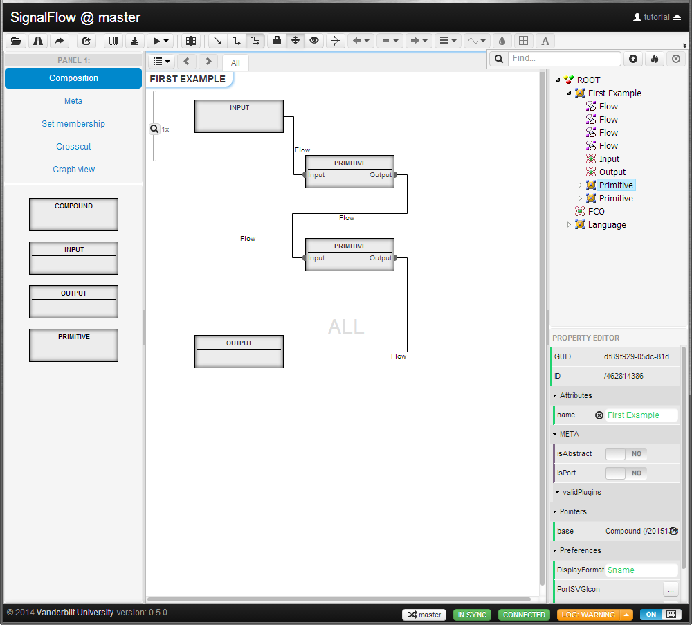

Now
we are done with the first version of our language and we are now able
to create a model with these building blocks. Of course it can be seen
that our language is rough-and-ready as we do not even have a container
object which would represent our model object (so we have to define our
processing units directly under the ROOT object) and we know that it
would be good if we would be able to have different kind of processing
units, like the ones that do the actual yet simple signal manipulating
tasks and the more complex ones which can have many simple processing
unit as a part and can implement difficult functionalities. So in the
next tutorial we will do some fine-graining on our language and we will
define some attributes as well.
If you lost somewhere but feel that you learned all there is in this
lesson and you want to continue you should probably need the result of
this lesson which can be downloaded from
here.
If you do not
knwo how to create a project from a file, the lesson ona-and-a-half is
for you!
Lesson one-and-a-half
- create project from file
As in the later lessons you have the possibility to start your work
from our results it would be wise to learn how to create a project from
an exported project file. It is very similar to empty project creation
so first you click on the

button and in the project dialog you press the 'Create from file...'
button. Then you type your project's name and press the 'Import
file...' button. Here another dialog shows where you can use a simple
file selecting dialog by clicking the 'Choose file' button or you can
simply drag and drop your file onto the area below the button. If your
file doesn't have the proper format then this dialog will tell you,
otherwise you can simply create your project by pressing the
'Import..." button.
So now let's head back to our modeling studies!
Lesson two
- refining our language
In this tutorial we will show how to fine-grain our riugh-and-ready
language by defining attributes, subclasses. We also show how to create
abstract objects.
As we already mentined in the end of our previous lesson it would be
wise if we could differentiate our processing units for the ones which
do 'simple' tasks and the ones that compose the simple ones to achieve
a more complex manipulation on the signals. In our language we call the
simple processing unit a 'Primitive' and the other a 'Compound' which
prety much covers that it is built by Primitives to represent a more
complex function. As both of the new elements represent the processing
we have to inherit them from our existing Processing object. Now we
will instantiate the new objects in a different way (not by dragging
from the parts panel). First we switch again to Composition mode and
select our Language folder. Then we drag the Processing object from the
object browser onto the main panel. When we drop the object a context
menu appears on the screen asking what operation we would like to do
with the object (for example: copy, move or instantiate). Let's choose
the

line and create an
instance under the Language folder and rename it to 'Primitive'. When
you are done you can repeat the same method to create the 'Compund'
object.
Now we have to extend our language to have its new rules according the
new objects. So let's change back to META mode and drop the two new
element onto the 'Signal Flow' sheet. Notice that the inheritance
relation among Processing and the new objects becomes visible right
away. As the Compound represents a unit which can contain other
processing units (and Flows among them) we have to insert these two new
containment relations. So once again draw a containment line from
Processing to Compound and one from Flow to Compound. And we are done!
notice that although Primitives can have ports and Compounds can have
ports we do not have to explicitly define these relations as they are
inherited from Processing! So our language looks something like this at
the moment:

Now as we said the
Primitives are the simple units which do a well defined task. To
describe this task we should create some property of our Primitive
objects. It would be not just a simple property but an attribute of the
type. To create an attribute you simply have to click on the '+' sign
before the 'ATTRIBUTES' label in the area of the given object which
will bring up an in-place text editor where you can give the name of
your new attribute (in our example we call it 'Function'). When your
are done and press the ENTER the attribute dialog
will pop up:

As you can see you are
able to give the type and the default value of your attribute. If your
attribute is an enumeration you should define its possible
values as well (by checking the box before Enumeration a separate
textbox appears where you should give every possible value in a
separate line). For our example the Function attribute would be a
string and it doesn't have a default value. If your are done with the
attribute editing you can press the 'Save' button. Now you have been
taken back to the META mode and your Primitive object now lists the
attribute Function in its attribute section. If for some reason you
want to edit your existing attribute or delete it, you can do that by
simply double-clicking on the attribute label which will bring up the
attribute dialog where you have the extra 'Delete' button.
In our current language we do not have the possibility to differentiate
the ports whether they receive signals or send them. To allow that, we
have to have some definition for Inputs and Outputs. As in the previous
step the Input and Output objects will also be instances of an already
created object, but they extend the Port definition. So using
either of our already discussed instantiation method let's create two
new instances of Port under the Language folder with names Input and
Output. Now to finish our job here we should add these objects to our
language by dragging them onto the Signal Flow sheet under META mode.
Of course because of the inheritance there is not much rule we should
add as the processing units can already have Input and Output because
of their common ancestor. What we on the other hand wan't to avoid is
that we do not want anyone to create just Ports anymore. To achieve
this goal we have to make the Port a so called 'Abstract Class'. To do
this we can select the Port object and then in the property window set
the 'isAbstract' value to 'YES'. When we do this the name of the object
becomes gray which tells us that the object is abstract. Once again
because of the inheritance the Input and Output also became abstract so
let's select them and switch of their isabstract value. You can also
notice that once you have an abstract object it would never appear on
the Parts panel as it cannot be instantiated.
Speaking of abstracts it would be wise to have the Processing also as
abstract as now the definitions of Primitive and Compound are usable on
the other hand we cannot really say the same from the Processing
(because it pretty much covers the same funcionality as the Primitive,
but it lacks the attibute Function). So let's do the previous
isAbstract setting with the Processing as well (and with the Primitive
and Compound!).
To create our first model we go into Composition mode and open the
ROOT. Here we create an instance of a compound as any signal flow model
can be represented as a big Compound. Let's rename to 'First Example'.
If we now navigate into this new object by double-clicking on its main
area you can see that our Parts panel have only the Primitive,
Compound, Input and Output as possible building blocks inside a
Compound. On the other hand we cannot see Flow because we create
connections by actually connecting items (as in case of relations in
the META mode). So if we put an Input and an Output under the First
Example we will be able to connect them. Do not forget that the
direction of drawing is important as we always draw from the source to
the destination. Now let's create one Primitive under the First Example
and let's create one Input and Output to it. We can create those prots
by navigating into the Primitive and instantiate the Input and Output
there. Now we want to connect the already created Input of our First
Example to the Input of the new Primitive. Let's navigate to the First
Example. We would expect that we are able to draw a line between the
Input and the Input of the Primitive, but that is not the case. What is
missing is that now the Ports of the Primitive cannot be seen. To make
them really visible as ports of their parent we have to set their
isPort property to true. To allow all port to behave like this we
should do this change on the Port object under our Language folder as
then the inhertiance will take care of the rest. So let's navigate to
our Language folder, select the Port object and in the
property editor switch the isPort to 'YES'. Now if we
navigate back to First Example we should see the Input and Output of
the Primitive:

Now we will be able to
connect the Input to the Input of the Primitive and its Output to the
Output of the First Example. Before we would do this let's create a
copy of our primitive! To copy an object you can simply use the drag
and drop method from the Object Browser and select the

line in the context menu.
But for now we would like to use a different approach which is the
following: you can copy an object if you push the CTRL
button down and drag the object. While you drag the
same
icon and the 'Copy...'
label appears in the ghost box to make you sure that you will create a
copy of your original object. Once we copied the object we copy also
its children so now we will have two Primitives with Input and Ouput
ports. To make our first example complete let's connect the Input of
First Example to the Input of a Primitive then connect its
Output to the Input of the other Primitive, finally connect that
Primitive's Output to the Output of the First Example.Let's also delete
the Flow between the First Example's Input and Output. To do this just
simply select the Flow line, and in its selection box's upper right
corner press the

icon. So now we have our very first model in our Signal Flow language:

Although we can see that
our model is functionally somehow correct we cannot say that it is
visually appealing. So in our next lesson we will address that problem
and try to enhance our model and language definitions to allow visually
appealing model creation! Again if you are lost somewhere our think you
already familiar with things so far you can get our
here.